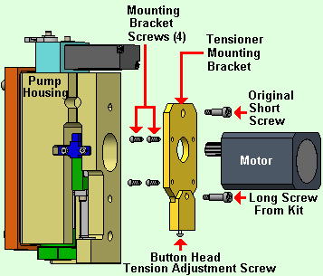

Installing Pump Belt and Tensioner Mounting Bracket
This procedure describes how to replace a pump belt and install the tensioner mounting bracket.
Perform this procedure when:
- Replacing a pump belt.
- Troubleshooting pump backlash errors.
- Installing belt tensioner
Note: The Tensioner Mounting Bracket is integrated into the Motor Mounting Bracket. Installation of the bracket prevents slippage backlash errors upon new belt installation.
Caution: The substrate pump belt is a different part number than the precision pump belt. The substrate pump belt is the black neoprene belt and black belt clip. Do not install a precision pump belt in the substrate pump, the belt size is not the same.

-
Prepare to install the bracket and belt.
-
Remove the motor from the pump (two screws).
Note: Only one of these screws will be used with the tensioner mounting bracket.

-
Remove the motor from the pump (two screws).
-
Install the tensioner mounting bracket and motor to the housing.
-
Tighten the tension adjustment screw so that the hole in the motor mount anchor and the slot in the motor mounting plate are aligned.
Note: Accurate alignment is achieved when the long screw slides easily through the lower mounting screw hole.

-
Tighten the tension adjustment screw so that the hole in the motor mount anchor and the slot in the motor mounting plate are aligned.